Leptodeira
The genus Leptodeira (family Colubridae) has 16 living species in SnakeList (none venomous), recorded in 20 countries (+3 territories).
- 16living species
- 16non-venomous
- 20countries
About the genus
A genus of the family Colubridae (colubrids).
Species
Showing 16 species
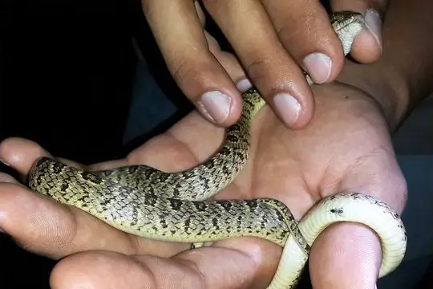
Ashmead's Banded Cat-eyed SnakeLeptodeira ashmeadii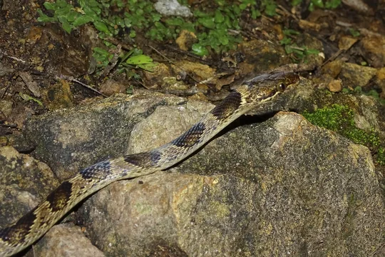
Baker's Cat-eyed SnakeLeptodeira bakeri Banded Cat-eyed Snake (annulata)Leptodeira annulata
Banded Cat-eyed Snake (annulata)Leptodeira annulata Black-banded Cat-eyed SnakeLeptodeira nigrofasciata
Black-banded Cat-eyed SnakeLeptodeira nigrofasciata Cat-eyed Snake (septentrionalis)Leptodeira septentrionalis
Cat-eyed Snake (septentrionalis)Leptodeira septentrionalis- No photo yetJubones Cat-eyed SnakeLeptodeira misinawui
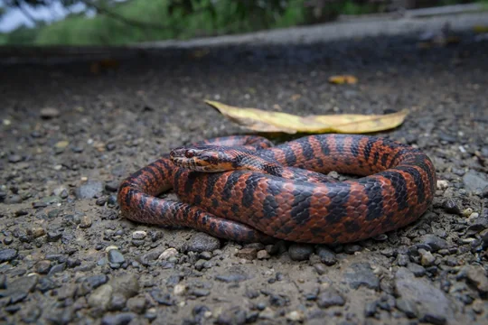
Mangrove Cat-eyed SnakeLeptodeira rubricata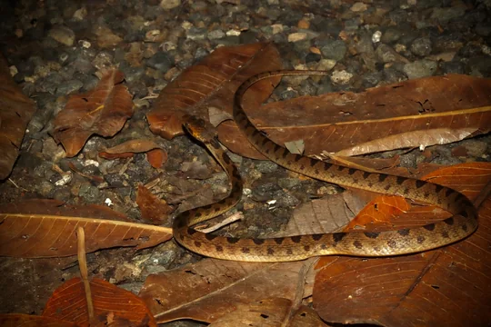
Ornate Cat-eyed SnakeLeptodeira ornata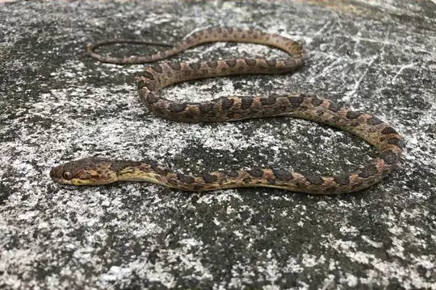
Peruvian Cat-eyed SnakeLeptodeira larcorum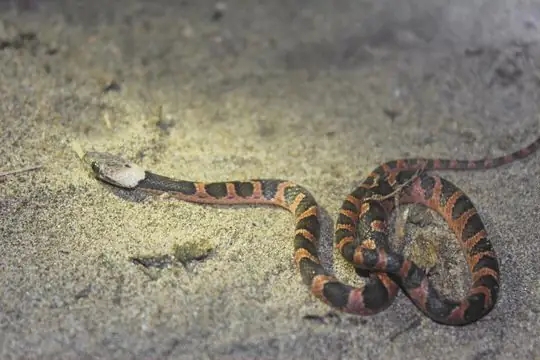
Rainforest Cat-eyed SnakeLeptodeira frenata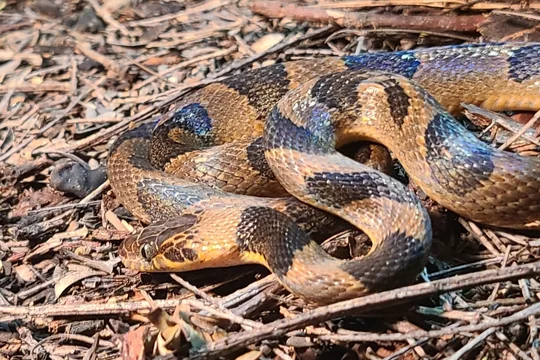
Southwestern Cat-eyed SnakeLeptodeira maculata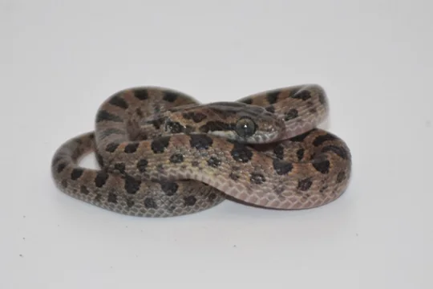
Splendid Cat-eyed SnakeLeptodeira splendida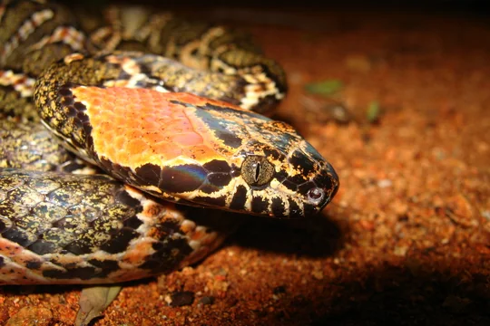
Uribe's False Cat-eyed SnakeLeptodeira uribei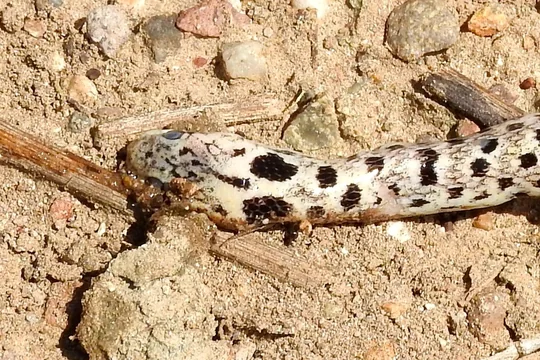
Western Cat-eyed SnakeLeptodeira punctata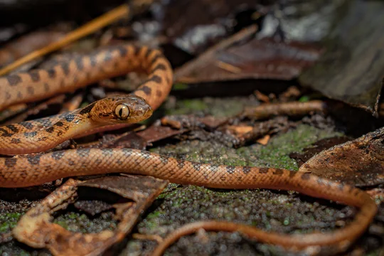
Leptodeira polysticta Leptodeira rhombifera
Leptodeira rhombifera
No snakes in Leptodeira match.
About the genus Leptodeira
- Distribution: living species recorded in 20 countries (+3 territories), on 2 continents: North America, South America.
- Family: Colubridae.
- Countries and territories: Argentina, Aruba, Belize, Bolivia, Brazil, Colombia, Costa Rica, Curaçao, Ecuador, El Salvador, French Guiana, Guatemala, Guyana, Honduras, Mexico, Nicaragua, Panama, Paraguay, Peru, Suriname, Trinidad and Tobago, United States, Venezuela.
Compare its species
Its living species side by side. Lengths come only from SnakeList’s reviewed, sourced accounts; the others are left blank rather than guessed.
| Species | Venom | Recorded in | Adult length (reviewed accounts) |
|---|---|---|---|
| Ashmead's Banded Cat-eyed Snake Leptodeira ashmeadii | Non-venomous | 3 countries (South America) | No reviewed account yet |
| Baker's Cat-eyed Snake Leptodeira bakeri | Non-venomous | 2 countries (+2 territories) (North America, South America) | No reviewed account yet |
| Banded Cat-eyed Snake (annulata) Leptodeira annulata | Non-venomous | 18 countries (+1 territory) (North America, South America) | No reviewed account yet |
| Black-banded Cat-eyed Snake Leptodeira nigrofasciata | Non-venomous | 6 countries (North America) | No reviewed account yet |
| Cat-eyed Snake (septentrionalis) Leptodeira septentrionalis | Non-venomous | 8 countries (North America) | No reviewed account yet |
| Jubones Cat-eyed Snake Leptodeira misinawui | Non-venomous | 1 country (South America) | No reviewed account yet |
| Mangrove Cat-eyed Snake Leptodeira rubricata | Non-venomous | 2 countries (North America) | No reviewed account yet |
| Ornate Cat-eyed Snake Leptodeira ornata | Non-venomous | 3 countries (North America, South America) | No reviewed account yet |
| Peruvian Cat-eyed Snake Leptodeira larcorum | Non-venomous | 1 country (South America) | No reviewed account yet |
| Rainforest Cat-eyed Snake Leptodeira frenata | Non-venomous | 3 countries (North America) | No reviewed account yet |
| Southwestern Cat-eyed Snake Leptodeira maculata | Non-venomous | 1 country (North America) | No reviewed account yet |
| Splendid Cat-eyed Snake Leptodeira splendida | Non-venomous | 1 country (North America) | No reviewed account yet |
| Uribe's False Cat-eyed Snake Leptodeira uribei | Non-venomous | 1 country (North America) | No reviewed account yet |
| Western Cat-eyed Snake Leptodeira punctata | Non-venomous | 1 country (North America) | No reviewed account yet |
| Leptodeira polysticta | Non-venomous | 3 countries (North America) | No reviewed account yet |
| Leptodeira rhombifera | Non-venomous | 6 countries (North America) | No reviewed account yet |